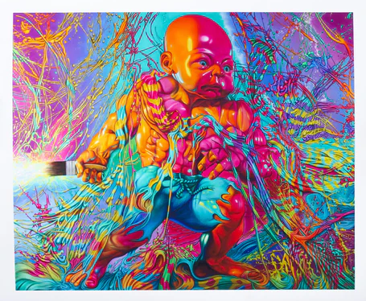
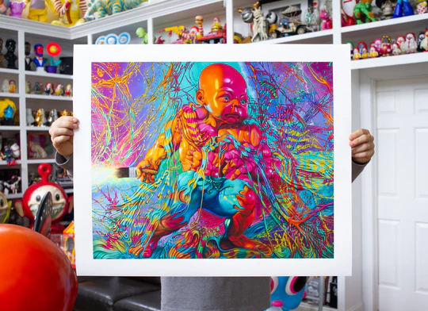
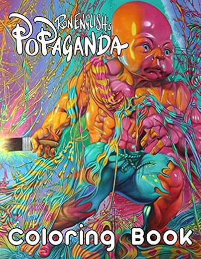

Exhibitions
The Underbelly Show, 78 NW 25th Street, Wynwood, Miami, Florida, US, December 2–5, 2011.
Literature
Ron English, Fauxlosophy: The Art of Ron English (San Francisco: Last Gasp, 2016), p. 150. ISBN 978-0867196566.
Ron English, Status Factory: The Art of Ron English (San Francisco: Last Gasp of San Francisco, 2014), p. 71. ISBN 978-0867197891.
Ron English, Original Grin: The Art of Ron English (Paris: Cernunnos, 2019), p. 345. ISBN 978-2374950938.
Notes
A reference sculpture created by Ron English is retained as supporting documentation for this work.
This work appears in Vandalog’s preview of The Underbelly Show, where it is identified as The Eternal Infancy of Art by Ron English for The Underbelly Miami.
Work-in-progress images are retained as additional documentation of the painting’s development.
This composition was later adapted by the artist as a related art print sold through PoPaganda. The PoPaganda product page lists Art Print - The Eternal Infancy as 26 × 31 inches, an edition of 50, signed and numbered.
A separate Sprayed Paint Art Collection listing documents The Eternal Infancy of Art HPM Embellished Print by Ron English- POPaganda as a 2021 giclée, hand-embellished with spray paint on fine art paper, not framed, measuring 31 × 26 inches, signed, and issued in an edition of 50.
The composition was also used as cover documentation for Ron English’s Popaganda Coloring Book and later as advertisement imagery for Five Points Festival 2025 Vendor Village.
Ancillary Documentation
The following materials document the reference sculpture, work-in-progress images, related prints, book-cover use, later advertisement use, and online source documentation.




Selected Online Circulation
Selected online documentation related to this work, its exhibition context, and later circulation. This list is not exhaustive.